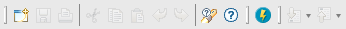

| New... | Open the NewWizards dialog for constructing new BioResources that will be placed in the current selected folder of the BioResource Navigator |
| Save | Save the contents in the active editor |
| Open the "Save as..." dialog for the active editor and allow for customized saving of the contents e. g. new name, format etc. | |
| Cut | Cut the selection and place it in the clipboard |
| Copy | Copy the selection and place it in the clipboard |
| Paste | Paste from clipboard to selected part |
| Undo | Undo last action |
| Redo | Redo the last undone action |
| Search help | Opens a view for searching for different topics in the help |
| Help contents | Open the help system in a browser (external or internal is chosen in the Preferences menu alternative) |
| Open Rich Browser | Opens Bioclipses internal browser |
| Next Annotation | Goto the next item in a list |
| Previous Annotation | Go back to the previous item in a list |